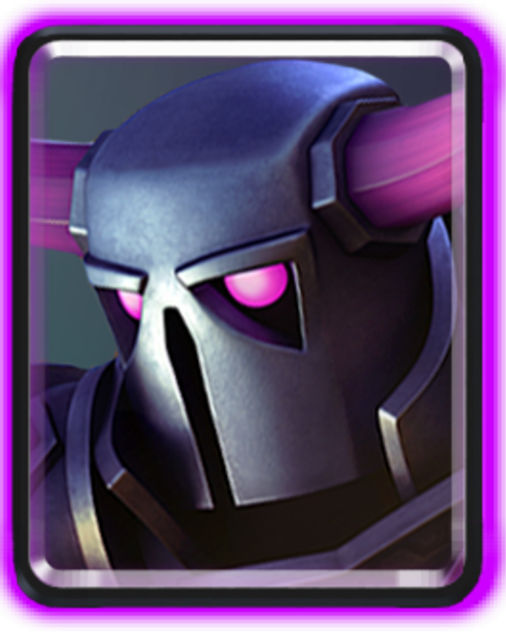
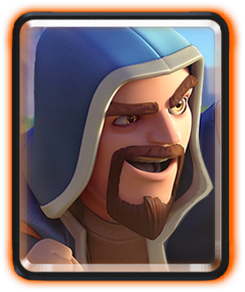
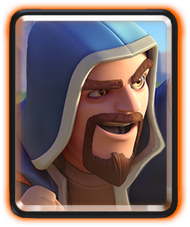

- P.E.K.K.A.: 7 elixir
- Battle Ram: 4 elixir
- Goblin barrel: 3 elixir
- Minions: 3 elixir
- Bats: 2 elixir
- Guards: 3 elixir
- Arrows: 3 elixir
- Wizard: 5 elixir
Average elixir: 3.8 elixir



 

Introduction
This is a deck with only one Arena 7 card, so you can subsitute the Guards for Goblins if you are Arena 6. Its basically the same. Other than that, all you need to know is that you can play defensive, but you need to go aggresive with P.E.K.K.A. Ram during double elixir and sudden death.
Card roles
- P.E.K.K.A.-this is your main tank and can be used mostly in offence but sometimes for defence as a tank killer(to kill Royal giant, Skeleton giant, or Giant) when there is not a better quick choice. To support it on offence, do bats or Minions but only charge during double elixir. One hit from this beast will cripple the towers so make sure it gets to the towers.
- Battle ram-your win condition. Let it hit the tower. You win if it does.
- Goblin barrel-throw it at the tower. Then the corner near the tower. Then back. Back and forth does it. They will be CONFUSED for like the whole match and rage quit. Because they cannot hit it with Arrows or Fireball!
- Minions-this is a good DPS card. Use it wisely against the Balloon and the Skeleton giant. It counters the Mega minion. It counters the Valkyrie. It counters alot. But don't use it against something only on ground and weak air. You can use it against seige and air decks like X-bow/Mortar tower attack at the bridge, Skeleton barrel, and Lava hound. Mortar locking on to the tower is very devestating even if it seems only a little and you ignore it.
- Bats-these Bats are really just defensive minions that are better against single target troops like Mega minion and other troops like P.E.K.K.A. Just watch out for Zap and Arrows and you will be able to stop alot with bats.
- Guards-use them for defence. Use them against Skeleton barrel and Prince. Use it against a Mini P.E.K.K.A. or a Knight. Use them the same as Goblins, just that they have a shield and one huge hit from a Prince will kill only the shield and not touch the Guard. Counter the Guards with Valkyrie or Minions or Spear goblins.
- Arrows-use them against any small Minion, Skeleton, small Goblin, Bat, anything Zappable, Even Flying machines! You can Arrow the tower if it has less than 50 health. Go Arrows!
- Wizard-spash! Damage! Destroy! Make them rage quit!! The Wizard has so much value!
Strategy
Early game
- This is an anti-Mortar cycle deck and does well against seige decks too(Battle ram) and you want to eliminate any X-Bows with the Ram if they do it as the first card. Mortar too.
- If they rush a Building like a Mortar or an X-bow on the Bridge, then Battle ram it a few tiles away so that the Battle ram is guaranteed to charge.
- If they play a building like the Inferno tower or more likely, Mortar or X-bow in the middle tiles close to the river, you do Bats or Minions to wipe it out.
- Play passive and defend with Guards, Bats, Minions, Arrows, and Wizard.